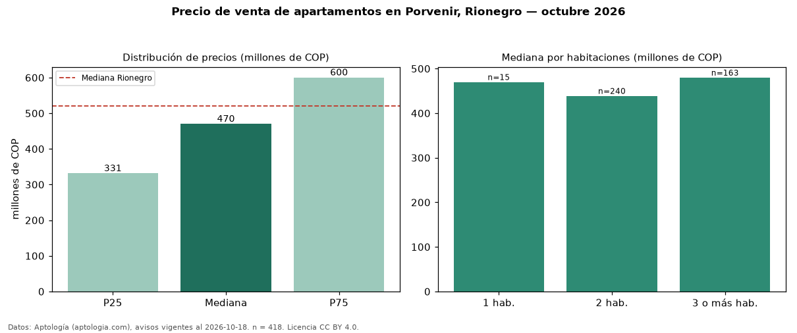

Precio de venta de apartamentos en Porvenir, Rionegro — octubre 2026
En El Porvenir, Rionegro, la mediana de precio de venta de apartamentos es COP 470 millones, según 418 avisos vigentes. Frente a la mediana de Rionegro para apartamentos (COP 520 millones), queda 10 % por debajo. Por metro cuadrado, la mediana es COP 7,26 millones/m² (n = 415 avisos con área), 2 % por debajo de Rionegro (COP 7,44 millones/m²). Con el precio por m² de arriendo del mismo segmento (COP 37.179/m² al mes), la rentabilidad bruta implícita es 6,1 % anual (aproximación con medianas de ofertas distintas). El área mediana anunciada es 62 m². El segmento con más oferta es el de 2 habitaciones (240 avisos, mediana COP 439 millones); pasar de 1 habitación a 3 o más habitaciones cambia la mediana +2 %. La administración mediana declarada es COP 262.000 al mes (n = 234). Por precio mediano es el puesto 12 de 18 barrios de Rionegro con al menos 30 avisos de apartamentos en venta (COP): en la franja media. Datos: Aptología (aptologia.com), CC BY 4.0 — https://www.aptologia.com/venta/rionegro/porvenir. Archivos: PDF, CSV con las cifras y gráfica PNG.

| Avisos únicos | 418 |
|---|---|
| Percentil 25 | COP 331.250.000 |
| Mediana | COP 470.000.000 |
| Percentil 75 | COP 600.167.910 |
| Mediana por m² | COP 7.259.259 |
Fuente: avisos vigentes de portales inmobiliarios recopilados por Aptología, deduplicados (mínimo 30 avisos únicos por celda). Precios pedidos, no cerrados. Fecha: 2026-10-18.